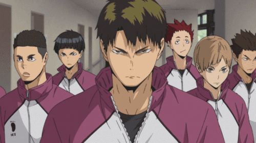

Seja bem-vindo ao portfólio Haikyuu: Shiratorizawa
É um Instituto da Prefeitura de Miyagi. Desde que o exame de admissão é extremamente difícil, a maioria de estudantes começou dentro estudando vigorosa ou através das bolsas de estudo do esporte. O Clube de Voleibol Masculino é considerado um "Poderoso", classificado entre os Top 8 do Japão. Shiratorizawa tinha sido invicto e o representante nacional da Prefeitura de Miyagi por gerações, tendo perdido somente recentemente para o time do colégio Karasuno.
Jogadores:
| Nome | Posição |
|---|---|
| Wakatoshi Ushijima #1 | Atacante/Capitão/Ace |
| Jin Soekawa #2 | Vice-Capitão |
| Eita Semi #3 | Levantador/Sacador |
| Reon Ohira #4 | Ponta |
| Satori Tendo #5 | Bloqueador Central |
| Yunohama #7 | Sacador |
| Tsutomu Goshiki #8 | Atacante |
| Kenjirou Shirabu #10 | Levantador |
| Taichi Kawanishi #12 | Bloqueador Central |
| Akakura Kai #13 | Líbero |
| Hayato Yamagata #14 | Líbero |
| Shibata #? | Atacante |
| Sagae Yuushou #? | Atacante |
